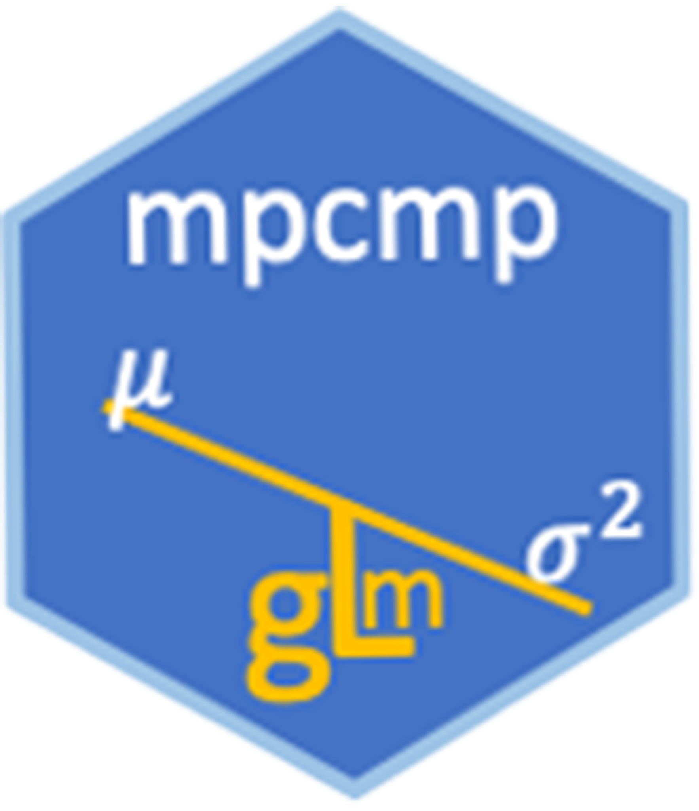

mpcmp 
The mpcmp package provides a collection of functions for estimation, testing and diagnostic checking for the mean-parametrized Conway-Maxwell Poisson (COM-Poisson) regression model for under- and over-dispersed count data of Huang (2017).
The mpcmp currently only supports log-linear mean models, however work is progressing to incorporate regression being linked to the dispersion parameter and a zero-inflated Conway-Maxwell-Poisson model.
Installation
Stable release on CRAN
The mpcmp package has been on CRAN since March 2019. You can install it from CRAN in the usual way:
Development version on Github
You can use the devtools package to install the development version of mpcmp from GitHub:
Usage
A reference manual is available at thomas-fung.github.io/mpcmp